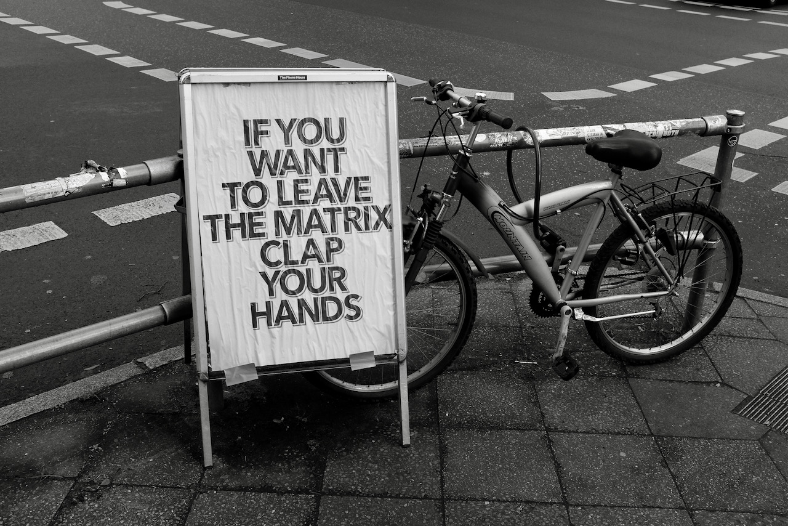

The great youtube random video generator (AKA artificial intelligence algorithm that costs one trillion megabucks) put this into my headphones. Yeah, I wasn't even looking at the video, it was just playing music to me starting with Moby... and then this happened:
I like it. It's haunting. Makes you feel like something from not of this world will knock on your door in a few seconds. And make you choose: stay safe and die old with a whole on your under pants, or go and die young in suffering and become a verse in an old creepy song.
22 Feb, 2021
It was 1995. It was 5 years before the end of the world. It was summer. Crazy appleseeds were hanging from a great chestnut tree standing between two small windows. The windows smelled of onion. The appleseeds smiled lots and lots. They were crazy every summer. Till the world changed.
It was 1996. Summer got hotter. Trees were no fun anymore. Pixels were fun. Strategizing was fun. Mashing buttons was fun. Appleseeds were pleased with life of simplicity. They needed a TV, some cookies, a lot of water and a pinch of electricity. No Internet was required. No subscriptions services or avocado toasts. No motivational speaker. It was them, non-blinking, smiling, in awe every 50 minutes or so. Information traveled from balcony to ear to legs to balcony. Fast, cheap, low-tech, low-bandwidth. Pixels told good stories. Appleseeds were happy. School was a couple of months away. The end of the world was 4 years away.
It was 1997. While the world moved and shacked and got connected and re-connected and learned how to punch itself and make soap and rap... The appleseeds learned some new words, looked at images on paper and were riding the pixels every-freaking-day-no-school-no-parents-no-girlfriends-no-boyfriends-no-diets-no-taxes-no-deadlines-no-career-ladders-no-children-with-diapers... nothing could stop them. And nothing did.
2000 came. Yeah, I've skipped a few summers. They were mostly good. No such thing as a bad summer, right? 2000 came and stopped them. Yeah. Without lifting a finger, without crashing the Wall Street, without flooding the world with fire and water and self-navigating-exploding-squirrels-that-are-also-ninjas. It just came and went. And took the crazy appleseeds with it. Leaving a lot of tobacco smell, a puddle of saliva mixed with tears one-to-one and some really bad poetry.
It's 2021 today. I am not going back. I just can't.
09 Feb, 2021
So, a funny thing has happened.
We came to Oslo and went into quarantine right away. It was mandatory and we were also thinking: it will do us good to spend 10 days relaxing at home, going for nature walks and investigating the selection of the nearby supermarket (Rema 1000 chain - I love when there are thousands in names, like Ziggy 3000, etc.). We were also staying in an apartment on the outskirts of Oslo, on a small mountain. There were almost no people, a lot of trees and snow and one road that was mostly used by buses and trucks. Oh, there was also a church and a tiny graveyard. What I'm trying to say that the place was only officially part of Oslo, but it wasn't Oslo city and if you didn't remind yourself that you're in Oslo you might as well be in Canada or Magadan.
During our first days we've received an sms from... well, from Oslo itself. The sms was in English and said that the coronavirus is spreading so everything will be closed except the farmacies, the grocery stores and schools (but only because they will switch to code red operations, whatever that means). We thought: cool, they sent sms even to people with non-Norwegian phone numbers and the sms are in English. The lockdown sounded more like what we were used to in Berlin, we were not phased by that.
But, the quarantine has ended and the airbnb hose went crazy and we needed to go to Oslo, like, the city center, the National Theater area, to print out some papers, buy some envelopes (we switched from doing everything digitally online to doing everything German style with paper and snail mail thanks to this one asshole whose name doesn't deserve to be called on the pages of this monologue). Anyway, we were rushing to get the printout and the envelopes -- end of Saturday and on Sunday most of the places are closed (German style, again). We were able to finish all the side-quests and decided to take a slow stroll back to the station to head home (to our new airbnb flat with the nicest owner). And then we've noticed... Nothing is closed in Oslo. Nothing. The feeling was weird and it took us a couple of blocks of walking to realize: we haven't seen a big street looking like that in more than a year! All the stores were open. People were walking without masks on. Folks were sitting in cafes and restaurants (with extra distance between the tables though). It was like... coming to a foreign country for the first time after you've spent your whole life in a post-soviet (or even soviet) country. Look at all the stores, look at all the people buying stuff, look at the choices and the lights and the names.
But what about the official SMS and the news on the web that said that we have a lockdown in Oslo?! I don't know. Was it a lie? A misscomunication? A misunderstanding on my part? (Yeah, my English is not very good, I am sorry!). Or, like my friend Benjamin said, maybe they tell this to newcomers so they would stay home while the rest of the nation enjoys their home decoration shopping and their special Swedish February buns called "semla".
05 Feb, 2021
Note to self: never rent an airbnb flat from a crazy person.
Sleeping with the bedroom door closed from the inside just in case. If we were in US I would've had a shotgun under my pillow. But... this is Norge! I mean Norway! We don't have guns under our pillows. We have a moose in the backyard, bacon cheese in a tube and quiet cold that works better than any freaking diet I have ever tried.
Anyway, the escape route is set and if we live to see the morning light rising over the neighboring mountains we will get to a new flat, where the owner is human and sensible. Only then we can start doing what we should've done already -- setting up the documents, the great electronic persona of Scandinavia and also do some work!
29 Jan, 2021
And we're back!
Now, in Norway. The snow outside is everywhere. The cold is persistent, strong and... surprisingly fun. I have been getting myself more and more familiar with the cold after I moved from Thailand to Germany and discovered I can finally have proper cold showers. After that I started sleeping under a thinner blanket during the winter time, otherwise I couldn't sleep because I was too hot and too sweaty. With the window open and the heating turned off.
So, obviously cold has become a sort of a friend. And now, rediscovering the Wim Hof method that I've used in Thailand everytime I felt flue-like symptoms, I'm getting in a more intense relationship with cold. Also now the cold is not this small tiny creature in the corner but a bigger beast ready to bite your head of if you show any signs of fear.
Fun times. Also the shower is much colder here during winter time. So I'm having all kinds of fun painful experiences while trying not to go into shock.
Other than that... the amounts of coffee I can drink without effect on my sleep is now unlimited. I do need to find a thinner blanket though. The current airbnb apartment has one of those super synthetic, light but fat and non-breathable blankets. I wake up sweaty even though the window is open and it's -16 C outside. Ruining my beauty sleep!
11 Jan, 2021
I've stumbled upon a practical way of using average numbers in real life.
Yeah, I know what an average is, but to be honest I have never seen a lot of sense of using it in real life. Unless you are splitting the bill into equal parts or something. But that happens less frequently these days.
But, reading this book about information theory today, I've noticed a fun way to use average numbers.
Let's try some examples.
Example one:
I live in a country where average salary is 5$. I know that my salary is 7$. This automatically means that there must be at least one person that has a salary that is less than 5$. Probably around 3$. And the higher my salary is in comparison to the known average (that is probably reported in the news every year either to brag or to shock the readers even if the readers are the same people that write the news) the lower the salary of someone else in the same country.
[It's probably obvious to some math-brained people, but it wasn't to me, so shut up!]
Example two:
If an average life span of a human is 59 years (a number that I've just invented) and you go to a cemetery and find a grave stone of a child that was alive for only 5 days... there must be a person in the world who is waaaaay older than 59 years (I'm too lazy to calculate but you get the idea).
What do it all mean to me?
I'm not trying to be philosophical about it (although I can). I'm just seeing this cool way of getting a quick sure information about the world by knowing just two numbers, when one of those numbers is an average and the other one is a sample from that average. Makes me appreciate math (which I usually don't do often). And makes me a bit scared when I think up more and more example based on my personal data and the average numbers.
06 Jan, 2021
Sometimes when I'm walking outside (in 3d and full color) and passing near a bus stop I see someone rushing towards the bus that has been standing there for a few moments already with opened doors. People have already finished loading into the bus. I can feel the doors beginning to close, the driver not seeing that there's a person outside in the cold unfriendly street doing the best she can to make it, running (maybe for the first time in years) with bags dangling in her arms hitting her knees and messing up with her rhythm. And then... sometimes, not every time, that rushing someone makes it to the bus. In these moments I forget about most of the things. In these moments a wave of satisfaction and warmness rushes over me. I feel good about the person that's made it onto the bus in the last moment. I feel good about the driver. I feel good about the other passengers. I feel good about people standing outside, seeing the same small... miracle.
It works with trams as well. It doesn't work with trains or subways.
04 Jan, 2021
Wow, fourth of January already. It was the New Year celebration just a second ago. We were eating salads and a cake and drinking coffee and tea and proseco and singing songs and talking bullshit. And then it was midnight in Berlin and I was brushing my teeth while everyone else were trying to burn the town down (again). And now it's the fourth of January already. And soon it will be the 21st.
But meanwhile we are here (and we are there if we are reading this much later).
So, the previous year was special in a lot of ways. One of them was me discovering a new musical artist (and his band) during one random event of an insomnia. Two things happened one summer night in 2020: 1. I couldn't sleep, so I've opened YouTube and clicked on a random music video, which was a concert by Billy Strings. 2. I've realized that insomnia can provide an unexpected gift, so you should never think of insomnia as a bad thing.
Yeah, I was listening to a lot of live Billy Strings shows afterwards, discovering the bluegrass genre, playing more guitar myself and singing songs about drugs, prison and... summertime.
I didn't have insomnia as often last year as before. Even though I was secretly looking forward to more surprises from YouTube's algorithm, sleep deprived brain and open-mindedness. I guess all that diet, vitamin supplements (D3 and B-100 in particular) and consistent meditation practice -- they all did something to me. Tonight I have seen one of the weirdest dreams of my life and I wasn't even super tired or high yesterday.
Anyway, I guess the point of this post is: go listen to Billy Strings. And if you cannot sleep for some reason, just get up and try to enjoy non-sleeping (don't try to be productive, try to be happy). That's all the advice I have for the future me today.
Fourth of Jan already??? Really??? I'm gonna be old and dead soon.
01 Jan, 2021
I have completely forgot about my camera yesterday, so there will be no photos of Benjamin eating legendary Olivier salad, also not photos of Katya singing and me making a fool of myself with an electric guitar.
But... I did find my camera a couple of days ago and took it with me for a wonderful cold and gray walk through a district of Berlin that is particularly hipstery and vibrant (yes, the smell of weed is everywhere... and it's a good smell).
I will not bore you with the whole photo real but there's one photo that kind of fits today (2021... need to remember... not to write 2020 for the next 12 months...).

Also, I just needed an image to work on my monologue engine's image support. (Yes, this glorious website is generated by software I wrote myself during this winter holiday).
31 Dec, 2020
The last day of 2020. I cannot not write anything about it today while it's happening. Well, for me it's just beginning to happen, but I have already seen my NZ friends are chilling at a beach basking in the summer sun (those upside down kiwi life is confusing).
Anyway, out Christmas tree AKA new year's tree AKA yolka has been standing beautifully for the last two weeks. Planted temporarily in a red bucket full or reach fertilized by our worms soil. The tree has actually started to smell of pine a couple of days ago. I think it's decided to grow roots in the bucket.
The chocolate cake is ready and the infamous Russian salad with a french name Olivier is in works. But that's not the main thing. (I know, how can a chocolate homemade cake not be the main thing). The main thing is that another year of the Rat is over, done, finished. So next year is a transitioning year for me (a Rat) and my wife (also a Rat but a more cute one than I am). I will probably write some thoughts down when it actually happens, but for now I'm just grabbing the edge of my seat to make sure I don't lose the control (of which I have almost none at this point).
So, what did I do in the morning oh the last day of 2020? Read about Information Theory. Sounds smart and it's probably is, but when I say I was reading about it, I mean I was looking at this simple logarithm for 30 minutes to try and understand it. (I have a file of notes on it though, and I don't think that's the amount of notes a person needs to understand a logarithm formula, but... I'm not that person).
Anyway, just got a request from my wife: "Make some coffee!" So gotta run. Drink coffee, eat food, meat the 2021 and dive into it to get all the gifts and surprises.
P.S. OK, I'm back (the coffee is cooking, ah the technology!). If you, future me/my avid readers are wondering where are all the smart philosophical thoughts about the corona virus and the US election and the global heating and the new M1 chip... These are all available everywhere else in the Internet. This is my website. My thought for today is: Russian cottage cheese pancakes (сырники) are a wonderful breakfast!